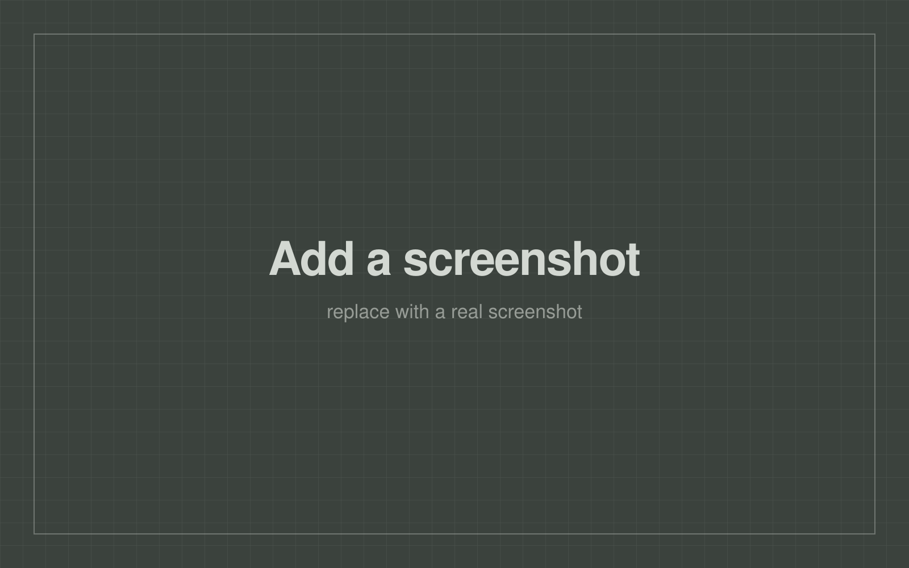

DiamondSim
Play the rest of the baseball season a few thousand times, count how often each team makes the playoffs, and show the answer as a percentage you can argue with.

What it is
A desktop application that takes the current state of an MLB season and simulates every remaining game, thousands of times over. Each simulated season produces a final set of standings and a postseason bracket; run enough of them and the frequency of each outcome becomes a probability. The app reports playoff odds, division odds and championship odds, along with the standings each run produced.
How the simulation works
Ratings
Each team carries an Elo rating that moves only on real, completed results. That rule is load-bearing: the moment simulated outcomes are allowed to feed back into ratings, a team that gets lucky in one imagined season starts the next one stronger, and the whole distribution drifts away from reality.
What actually decides a simulated game is an effective rating, computed fresh for that matchup from the team rating plus adjustments for the announced starting pitcher, the lineup, and the current state of the bullpen. It's used once and thrown away. Nothing derived from a simulation is ever written back.
Fatigue
Bullpen usage accumulates across a simulated season, so a team that burns its relievers in a long stretch of close games is weaker a week later. The data model holds the fatigue state; the rules for how fatigue builds and recovers live entirely in their own module. Models store facts, policy lives elsewhere — it's a separation that makes rebalancing a matter of editing one file instead of hunting through the codebase.
Postseason
The bracket is simulated round by round from the standings each run produces, rather than approximated with a formula. Series results are aggregated across runs so you can see not just who made it, but how they got there.
Problems worth solving
-
Two brackets that are the same bracket
Aggregating results means recognising when two simulated postseasons produced the same outcome. Getting that comparison wrong quietly splits identical results into separate buckets and every reported probability comes out too low.
Two mistakes caused that. First, home-field assignment was part of the comparison key even though it isn't a visible outcome — the same set of series winners looked like two different brackets depending on venue. Second, the two division series happen in parallel with no meaningful ordering, so the same pair of results compared unequal purely because of the order they were stored in. The key now excludes home field entirely and stores the parallel series as an unordered pair, which is what they actually are.
-
Impossible odds as a bug report
At one point six teams showed 100% playoff odds, which is arithmetically impossible — there aren't that many spots. Rather than clamping the display, I traced it back through the aggregation to the underlying cause. Outputs that violate the rules of the domain are the most useful bugs you get, because they're unambiguous.
-
Threads racing over the same cache
Simulations run off the main thread so the interface stays usable, and they share cached data. Concurrent writes were corrupting cache files in a way that was masked for a long time by a per-team file layout — the collisions were rare and looked like bad data rather than a race. The fix was per-store locks plus writing to temporary files named with the process ID, thread ID and a unique identifier, then moving them into place, so two writers can never be mid-write on the same path.
-
A layout that only broke for one division
One division's standings table was cutting off text while every other division rendered fine. The cause was column widths estimated by counting characters and guessing a per-character width — an assumption that holds until one team's name is wide enough to break it. Replacing the guess with real text measurement from the font itself fixed it permanently, for every name.
-
Making a toolkit behave at high DPI
Two interface gotchas cost real time. Frames in the toolkit default to a fixed height, which leaves mysterious blank gaps whenever a frame is created before its children — the fix is to declare them collapsed and let content size them. And the native tree widget used for standings ignores the toolkit's DPI scaling entirely, so it needed its own scaling helper and a baseline font size to stay legible on a high-density display. Both are cases where I deliberately didn't take the easy escape route of swapping in a different widget, because the underlying problem would have followed me.
How I build it
Simulation logic and interface code never mix — they're kept apart by a dedicated runner that owns the boundary, which is what makes the engine testable without a window on screen. State objects are immutable and updated by producing modified copies rather than mutating in place, so a half-applied update can't leave a season in an inconsistent state.
Work goes in reviewable phases with tests written alongside fixes, and every bug that gets fixed gets a regression test so it can't come back quietly. Before packaging, every screen gets walked through by hand.
Screens
